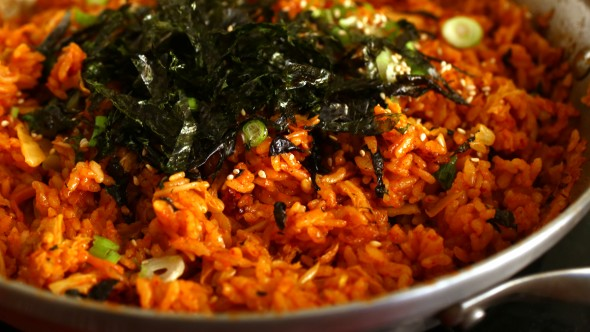

Kimchi Fried Rice

For when you're feeling homesick
This simple, simple dish is super, super tasty. It’s just a few ingredients, but it’s a dish
much loved by Koreans. This version is simple, but you can dress it up with a bit of spam, beef, or protein of choice.
- 3 cups steamed rice
- 1 cup chopped kimchi
- 1 cup diced spam
- 1/4 cup kimchi juice
- 1/4 cup water
- 2-3 tbsp gochujang
- 3 tsp toasted sesame oil
- 1 tsp vegetable oil
- 1 chopped green onion
- 1 tbsp roasted sesame seeds
- 1 sheet of gim, roasted and shredded
- Heat up a pan. Add the vegetable oil.
- Add the kimchi and spam and stir fry for 1 minute.
- Add rice, kimchi juice, water, and gochujang. Stir all the ingredients together for about 7 minutes with a wooden spoon.
- Add sesame oil and remove from heat.
- Sprinkle with chopped green onion, roasted gim, and sesame seeds. Serve right away.